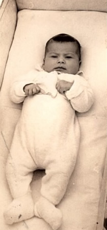
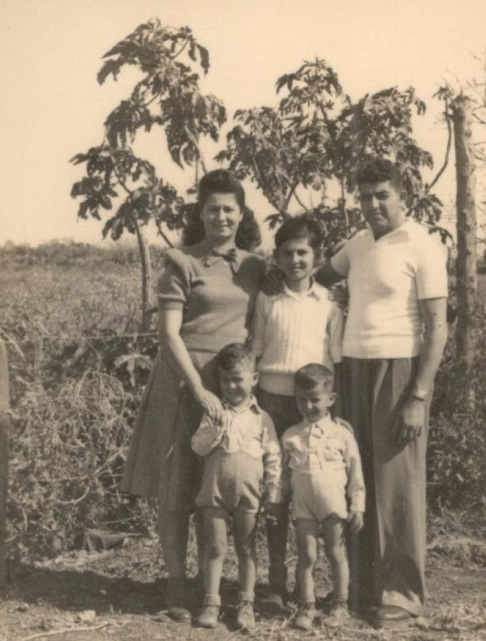
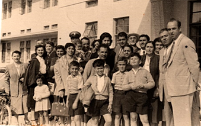
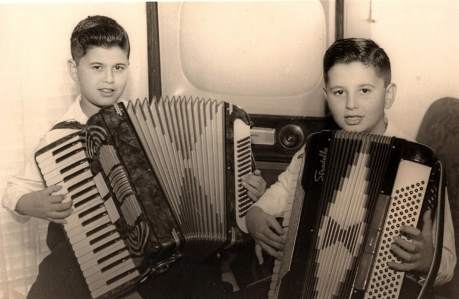
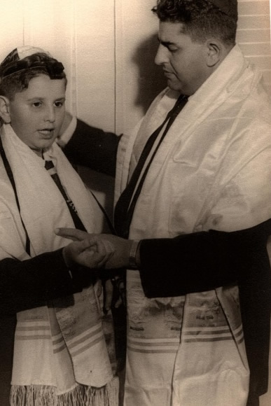
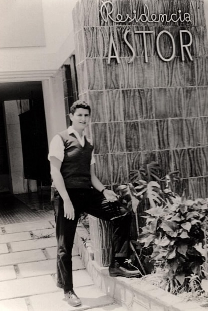
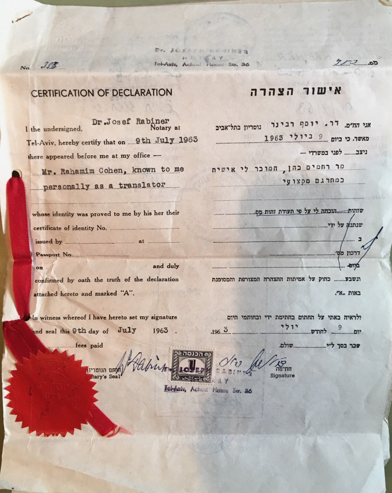

Mi
abuelo, Arie Cohen Cohen
Arie Cohen Cohen, mi abuelo materno nació en el territorio de Palestina, en Tel Aviv, bajo ocupación británica, un 12 de septiembre de 1944.
En 1948, el día que declararon la independencia de Israel, hubo varios ataques por parte de los países árabes, y en uno de esos bombardeos fue destruida la casa de mi abuelo, mi bisabuela agarró a los 2 hijos corriendo y escaparon debajo de la escalera más cercana, en esa época no habían refugios sótanos ni nada de lo que existe hoy día, gracias a D-os se salvaron pero la casa quedó en ruinas. Luego Israel contra ataca, y gracias a esto se ganan terrenos, esos territorios dejados por los árabes el gobierno se los asignó a las familias judías cuyos hogares fueron destruidos. La familia de mi abuelo fue asignada a la zona de Yamusin. Mi bisabuelo Reubén construyó una casa muy humilde de madera que no tenían ni baño ni regadera, había una letrina fuera de la casa en donde ahí hacían sus necesidades, y se bañaban en una paila que calentaban el agua a gas primero a un hermano luego al otro, en ese lugar no había electricidad, la nevera se enfriaba con bloques de hielo que compraban a un vendedor que pasaba diariamente y las ponían sobre la nevera y eso hacía que permanezca fría hasta la siguiente visita. Detrás de la casa había un jardín donde mi bisabuela Penina tenía sembrada las hortalizas que iban a comer, contiguo a un gallinero que de ahí sacaban los huevos que se comían a diario y se buscaban todas las mañanas.

Jardín que quedaba detrás del ranchito. De derecha a izquierda: Mamá de mi abuelo, abajo Moises (hermano mayor de mi papá) Jacobo hermano menor de mi bisabuela), Mi abuelo Arie y su papá.
La diversión era un columpio que mi bisabuelo Reubén les amarró con 2 cuerdas y una tabla a un árbol junto a la casa. En esa zona solo se hablaba hebreo y en la casa también los papás de mi abuelo hablaban entre ellos bujari, en ese lugar transcurrieron sus primeros 6 años de vida hasta que se mudaron a Basel en Tel Aviv, un apartamento pequeño ubicado en el tercer piso cerca del taller mecánico del cual mi bisabuelo era dueño en Yafo. El apartamento era pequeño tenía una sola habitación así que mis bisabuelos dormían en ella y mi abuelo y tío abuelo dormían en la sala. Practicaban Shabat tradicional con Kidush, no tiene recuerdo de haber ido a la sinagoga en esta etapa, las comidas eran con las tradiciones bujaris. No recuerda haber cuidado el kashrut. Su papá conducía del taller a la casa los carros que estaba arreglando y con eso se desplazaba. Mi abuelo iba a un colegio llamado Har Nevó, que quedaba a media cuadra de su casa junto con su hermano, siempre caminando, al colegio iban sin uniforme. A pesar de vivir en Tel Aviv no tenía recuerdos de paseos a la playa de hecho no sabía nadar, recuerda que de vez en cuando visitaban a un tío, esposo de la hermana de su mamá que vivían en una urbanización más privilegiada, él era chofer de autobús público y ese era un trabajo bien remunerado, donde vivían tenían piscina y ahí iban. Recuerda que una vez sin querer saltó en lo hondo y se ahogó, lo sacó su tío porque no sabía nadar.
Es en 1953 a sus 9 años que la familia decide migrar a Venezuela, porque el hermano de su mamá, que vivía en ahí, cada vez que los visitaba y se quedaba con ellos, derrochaba y no le importaba gastar dinero, la fama era que en Venezuela el dinero guindaba de los árboles de lo fértil que era ese país, e Israel era un país pobre y muy difícil de surgir, por eso deciden migrar.
En Caracas, vivía un tío abuelo, además de dos hermanos de su mamá ya casados y establecidos en Venezuela. Así llegaron por avión, y los primeros meses se quedaron en casa de su tío por parte materna, Isaac. Ahí se quedaron los 4. Hay una anécdota; que cuando se fueron de Israel la familia entera fue al aeropuerto a despedirlos y nadie sabía cuándo volverían, era un vuelo larguísimo en avión de hélice con parada en Holanda. Cuando llegaron toda la familia los fue a recoger para darles la bienvenida. Se fueron con lo que tenían puesto sin mucho equipaje y llegaron a Caracas por la carretera vieja de La Guaira.

A
los meses se mudaron a un apartamento muy pequeño, su papá Reubén
era muy orgulloso y quería independizarse. El pequeño apartamento
de una habitación en donde los 4 dormían en la misma cama y un
baño, tenía una salita pero esta estaba ocupada con la mercancía
(telas) que mi bisabuelo vendía, y mi bisabuela cortaba de 3 metros
en 3 metros para que él se lleve a vender. Ambos trabajaban para
mantener a mi abuelo Arie y su hermano Moisés. Mi bisabuelo se
dedicó a vender la tela que le daban sus tíos y cuñados por cuotas
(es decir por partes fiado) e iba a los barrios a vender por la
semana y a cobrar los fines de semana. La diversión del domingo era
acompañarlo a cobrar y al final de la jornada lo más divertido era
sentarse los 3 a comer un pabellón criollo en una taguara de la
zona. Mientras ellos trabajaban, al llegar  del colegio los
hermanos atendían la casa se turnaban quien lavaba platos y
quien tendía la cama, las condiciones eran muy duras pero mi
bisabuelo nunca pidió ayuda. Un día un rabino de Nueva York
tocó la puerta a mis bisabuelos Reubén y Penina y les ofreció
llevar a sus hijos a una yeshiva en Nueva York. Ellos accedieron,
sabían que ahí nada les faltaría y ellos se dedicarían únicamente
a trabajar para luego poderlos buscar cuando la situación mejore,
fueron momentos difíciles pero aparentemente la decisión correcta.
Tenía mi abuelo Arie para entonces 10 años. Mi tío abuelo contaba
que mi abuelo lloraba muchísimo, así que mi tío le pegaba con la
almohada para que se callara, le costó muchísimo adaptarse, sólo
se comunicaban por cartas. Los viernes a cada muchacho le asignaban
una familia para pasar Shabat y mi tío abuelo Moisés con mi abuelo
les asignaron una familia de apellido Ravinovitch, era ashkenazi. Un
día reciben una visita del hermano de su madre (su tío Isaac) que
se dirigía a Israel hizo escala por Nueva York y los fue a visitar,
les tomó una foto y junto a una carta le mandó a su hermana Penina
reporte de los muchachos, cuando ella la recibió se asustó, ya que
estaban flaquísimos (porque en una yeshiva no se come como en casa)
y pensó que nadie les daba de comer, y le dijo a su hermano que de
vuelta de su viaje se los traiga a Caracas.
del colegio los
hermanos atendían la casa se turnaban quien lavaba platos y
quien tendía la cama, las condiciones eran muy duras pero mi
bisabuelo nunca pidió ayuda. Un día un rabino de Nueva York
tocó la puerta a mis bisabuelos Reubén y Penina y les ofreció
llevar a sus hijos a una yeshiva en Nueva York. Ellos accedieron,
sabían que ahí nada les faltaría y ellos se dedicarían únicamente
a trabajar para luego poderlos buscar cuando la situación mejore,
fueron momentos difíciles pero aparentemente la decisión correcta.
Tenía mi abuelo Arie para entonces 10 años. Mi tío abuelo contaba
que mi abuelo lloraba muchísimo, así que mi tío le pegaba con la
almohada para que se callara, le costó muchísimo adaptarse, sólo
se comunicaban por cartas. Los viernes a cada muchacho le asignaban
una familia para pasar Shabat y mi tío abuelo Moisés con mi abuelo
les asignaron una familia de apellido Ravinovitch, era ashkenazi. Un
día reciben una visita del hermano de su madre (su tío Isaac) que
se dirigía a Israel hizo escala por Nueva York y los fue a visitar,
les tomó una foto y junto a una carta le mandó a su hermana Penina
reporte de los muchachos, cuando ella la recibió se asustó, ya que
estaban flaquísimos (porque en una yeshiva no se come como en casa)
y pensó que nadie les daba de comer, y le dijo a su hermano que de
vuelta de su viaje se los traiga a Caracas.
A los 11 años de vuelta en Venezuela se mudan a Colinas de Bello Monte, la zona para la época estaba despoblada y en frente de su casa había, cuenta mi abuelo, algo así como un monte y la diversión era ir a cazar mariposas, habían paseos a caballo. Al cabo de un tiempo su papá pudo ahorrar y compró un negocio propio que era el negocio de su tío Aba (quien se había mudado a México). A los 2 hermanos los metieron 2 veces a la semana en clases de acordeón, e iban al colegio Campo Alegre, era un colegio privado de habla inglesa (el mismo en el que yo estudié 5to y 6to grado). Luego mis bisabuelos se enteraron que este colegio no estaba inscrito en el Ministerio de Educación, así que los trasladaron al St George, colegio británico en donde recibían clases de español, les quedaba cerca de la casa e iban caminando.

Por la zona donde vivían, sus amigos no eran judíos, sus amistades eran los vecinos, se divertían jugando en la calle. Cuando se le preguntó si sentía antisemitismo dice que en esa época ni sabía que era esa palabra todos eran iguales nunca se sintió diferente. A sus 12 años llega su abuela materna de Israel que no se unió antes a ellos porque debía esperar que su hijo menor de edad (hermano de mi bisabuela Penina) haga el servicio militar exigido por Israel, ella y su hijo Jacobo el menor de los 5 hermanos de su mamá Penina, se mudan a su casa.
De su Bar Mitvah no recuerda preparación particular, como estuvo en una yeshiva ya sabía rezar y practicaba su Parashá con su papá Reubén. El Bar Mitvah se realizó en la primera sinagoga de la Asociación Israelita de Venezuela ubicada en el Conde, la fiesta se celebró en el edificio donde vivían en Bello Monte ya que como el PH estaba desocupado y abierto aprovecharon y ahí montaron unas mesas, las mujeres de la familiacocinaron sus tradicionales comidas bujaris y mi abuelo y tío animaron la fiesta tocando el acordeón, así transcurrió la celebración rodeado de su abuela primos y tíos del lado paterno y materno. La actual sinagoga grande de la Asociación Israelita en Maripérez se construyó a raíz de que el estado expropia el terreno para la construcción de la actual avenida Bolívar.
Más tarde con el arduo trabajo de sus padres buscan un apartamento más grande y se mudan a las Delicias de Sabana Grande. Recuerda que su papá para que vayan a la sinagoga los sábado los despertaba bañándolos con un vaso de agua, en esa época los niños no iban a la sinagoga, eran los únicos, pero la recompensa luego era a sus 14 años manejar de vuelta a su casa el Dodge 1954 sincrónico de su papá y así de sábado en sábado se turnaban un día Moisés y un sábado mi abuelo Arie.
Para 1958 cae la dictadura de Pérez Jiménez y lo sigue una junta de gobierno precedida por Wolfang Larrazábal, su papá que se movía como comerciante y conocía mucha gente, tenía un contacto cercano y le pide un favor para una carta de recomendación a sus hijos para el liceo Andrés Bello, en aquella época lo mejor que había académicamente hablando. Asistía gente de las mejores familias, y fue así como los aceptaron en 1959. Era un liceo muy estricto no podías reprobar nada o te expulsaban del liceo, el respeto a los profesores era grandísimo, llegaban al salón y todos se ponían de pie a saludar, en las mañanas se cantaba el himno de Venezuela. El horario del liceo era de 8 am a 12m y de 2:30 pm a 4:30 pm, mi abuelo y su hermano iban caminando a almorzar a su casa para esa época él seguía sin relacionarse con gente judía de su edad. Excepto una muchacha judía que estudiaba con ellos en el liceo.
Lamentablemente la mamá de mi bisabuela Penina, se enferma y tras pocosmeses fallece en su casa (mi abuelo cuenta que su Bar Mitzva fue el único que presenció su abuela desus nietos). Mi abuelo era muy cercano a ella porque los cuidaba mientras sus papás trabajaban al llegar del colegio. Para divertirse con ella tomaban un autobús público a lado de la casa, se montaban y paseaban hasta que volviera a llegar al mismo punto y así paseaban por la ciudad disfrutando sus vistas y de forma gratuita. Esta muerte dejómuy afectada a mi bisabuela Penina, y mi bisabuelo Reubén decide cambiar el ambiente y para alegrarla se mudan a un apartamento más grande y más bonito en la urbanización la Florida más cerca del liceo donde estudiaban.
En Kipur cuando era niño se hacía Kaparot con gallinas y las gallinas las traía su papá en la noche a casa y las mataba con una hojilla en el pescuezo en el lavandero y después de hacer Kaparot y entre él y su hermano las desplumaban. Para Pesaj siempre tenían costumbre de comer arroz no había otra vajilla era la misma que las fiestas, se prendían velas los viernes y se salía de Shabat con la Abdalá recitado por su papá. Y mi bisabuelo (Reubén) tenía la costumbre de preparar agua con azúcar para que todos tengan un comienzo de semana dulce. Los abuelos de mi abuelo Arie fueron los fundadores de la primera sinagoga de rezo Yerushalmi ubicada en una casa en la pastora, ellos se trajeron el Sefer desde Israel, hoy día ese Sefer se encuentra en la sinagoga Bet-él en San Bernardino la cual mi familia está entre las fundadoras. Además mi bisabuelo Reubén tenía como costumbre donar las palmeras para todas las sinagogas de Caracas y a las familias que no tenían como comprarlas en la celebración de Sucot, él se alegraba al sentir que él estaba regalando la mitzva de tener una suca, él era un hombre de muchas mitzvot hasta hoy día hay gente que se acerca con anécdotas de cuanto ayudaba en situaciones difíciles a gente que lo necesitaba sin que ninguno supiera y todo lo hacia baseter (anónimo).
Mi abuelo, que casi nunca tuvo contacto con pares judíos se entera que existe una organización que reúne a los jóvenes judíos de la comunidad llamada Bnei Brit y se reúnen los sábados en casa de un compañero que cedió el espacio para este motivo, esa fue primera vez que escuchó de algo así, y asistió por primera vez a los 17 años, eran de 10 a 15 jóvenes que se reunían habían actividades dirigidas al sionismo y jugaban y compartían, es ahí donde conoce a su actual esposa mi abuela Elena Hartman. Para ese momento eran amigos, él había entrado a la facultad de medicina de la UCV para sus estudios de pregrado de medicina, él siempre supo que a eso se quería dedicar y lo ayudó el hecho que tuvo excelentes calificaciones. Es en 1969 cuando se gradúa de médico, se casa con mi abuela Elena, hizo su internado rotatorio en el Hospital Universitario de Caracas en donde le pagaban 2 mil bs, mientras tanto su esposa trabajaba como secretaria ejecutiva para la General Motors de Venezuela y ganaba 4 mil bs, y entre ambos mantenían los gastos de la casa.
Para 1970 cuando nació su primer hijo mi tío Rubén Cohen se mudan a las Acacias en la urbanización la Florida, mi bisabuelo hizo el brit en su casa donde estaba lleno de familia y amigos y se trajo a rabinos de Israel para que bendigan al primer nieto varón que además lo nombraron como él, Rubén Cohen, la comida la cocinaron las mujeres de la familia al igual que los dulces, era sencillo sin decoración.
Aplicó para 100 universidades en Estados Unidos y lo aceptaron en 20 luego junto con mi abuela las visitó y decidió quedarse en Detroit eso fue en 1972. Ahí vivieron 4 años mientras duró el postgrado. Fueron con tío Rubén y mi tía Nina y allí nacieron mi mamá, Emily y mi tío Denny. Al terminar su residencia le ofrecieron quedarse allá al graduarse por su sobresaliente carrera, pero él soñaba con volver a Venezuela junto con su familia y aquí crecer como profesional, en esos años todos querían volver.
Antes de volver mientras hacia su postgrado llamaron a su profesor para dar una conferencia en Venezuela así que le dijo a mi abuelo que lo acompañara y que dieran la conferencia juntos, y así hizo, unos días antes de volver mi abuelo le dice a mi bisabuelo que va a ir a la Trinidad a ver una clínica que están construyendo y mi bisabuelo decidió acompañarlo. En el camino de vuelta se para en un semáforo en Caurimare y vio una construcción y le comentó a su papá que él creía que eso era una clínica. Al día siguiente se devolvió a Detroit. Pero mi bisabuelo Rubén empezó a investigar y se dio cuenta que si era una clínica y llamó al dueño de la construcción para ver si tenía una acción disponible y le dijo que no pero mi bisabuelo siguió insistiendo hasta que un día una doctora que había comprado una acción se murió por cáncer y se la vendieron a mi bisabuelo. Como ni mi bisabuelo ni mi tío abuelo Moisés sabían cómo era un consultorio se lo hicieron igualito a un consultorio que estaba al lado.
El 26 de abril de 1976 abre su consultorio en la policlínica metropolitana en donde comenzó su carrera que hasta hoy día sigue activa con más de 18 mil historias.
Anecdota
Cuando mi abuelo regresó de los Estados Unidos y comenzó a trabajar, él iba todos los días a su consultorio (el mismo que mi bisabuelo Reubén le había decorado) y se sentaba a esperar que llegaran las pacientes. Por supuesto que en un principio no atendía a casi nadie (para no decir nadie), pues no lo conocían todavía. Mi bisabuelo por su parte trabajaba en la colchonería y a cada mujer que entraba al negocio le hablaba de su hijo “El Doctor” y hacia un trato con ella. Él les ofrecía dinero para que paguen la primera consulta, si no les gustaba, pues “no vuelvan” les decía y si les gusta ustedes pagan sus próximas consultas. Y así fue como mi abuelo comenzó a recibir a sus primeras pacientes. Que no está de más decir que quedaron fascinadas con él y no sólo volvieron sino que lo recomendaron a sus conocidas.
Mi Abuelo viajó por muchos años a los congresos que se hacían en diferentes ciudades de Estados Unidos, para así mantenerse siempre al tanto de los últimos y más modernos tratamientos. Hoy en día por los avances tecnológicos, ya no es necesario viajar, pues toda la información se recibe por vía del internet.
Mi abuelo ha tenido gracias a D-OS una carrera muy exitosa y él ha sido feliz haciendo lo que más le gusta en su vida: practicar su profesión, que no es más que ser un enviado de D-OS en el proceso de curar y traer vida al mundo.
Anécdota
Mi abuelo es un hombre muy especial, muy pensativo, inteligente y estudioso, pero un poquito despistado. Siendo el muy joven, ayudaba a su papá en la colchonería. Un día mi bisabuelo le encomendó vigilar un colchón que se encontraba en la entrada del negocio hasta lo vinieran a buscar. Al llegar la camioneta que se iba a llevar la mercancía y le preguntan a mi abuelo por el colchón. Mi abuelo que estaba a la entrada de la tienda responde que está a su lado y cuando se percata, no hay ningún colchón. Se habían robado el colchón frente a sus narices y mi abuelo ni se dio cuenta. En otra ocasión se le encargó manejar la camioneta y trasladar un colchón al comprador. Mi abuelo ya casi llegando al lugar de entrega, escucha que alguien en otro carro le está haciendo señas, mi abuelo baja la ventana y el señor le pregunta si no va a recoger el colchón que se le cayó hace ya unas cuantas cuadras. ¡Mi abuelo tan bello no se había dado cuenta!
DOCUMENTO
